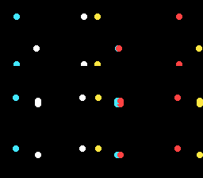

|
OpenSNES
Modern Open-Source SNES Development SDK
|
|
OpenSNES
Modern Open-Source SNES Development SDK
|
Family 3 (Sprites) · rung 3.7 — the showcase, and an honest one.
Bullets, particles, a shower of coins, a flock of enemies — games throw a lot of sprites at the screen. This rung answers how many can you actually move at 60 fps, and the answer is more nuanced than "128, it's hardware": the sprites are free, but touching each one from C every frame is not. Knowing where that line sits — and how to cross it — is what lets you budget a busy scene instead of discovering the slowdown after you've built it.

The single idea: the per-sprite update budget. The SNES has 128 hardware sprites and moves them with one OAM DMA per frame — cheap. But computing and writing each sprite's position in C is not free: the OAM buffer lives in bank $7E (every write is a slow long address) and cc65816 spills registers in a busy loop. Measured on luna, the smooth-60 fps ceiling for per-sprite C motion is **~32 sprites**; 40 already drops to 30.
So this swarm runs 32 dots at a rock-steady 60 fps, each bouncing independently. The motion is deliberately trivial (integer add + edge bounce — no multiply, no trig) so what you're seeing is the cost of the OAM update itself, not the maths. Positions are written straight into oamMemory[]; a single oam_update_flag lets the NMI's DMA push them all.
To go past the ceiling you move the work off the main CPU or out of C: chips/sa1_starfield runs 128 birds of Lissajous trig on the SA-1 at 10.74 MHz; a hand-written assembly update loop is the other route. Same 128-sprite hardware, a bigger compute budget.
Probe oracle: swarm_frame advances once per displayed frame.
console, dma, background, sprite
← previous: dynamic_metasprite · streaming a multi-tile character · the family caps here — for 128 sprites of heavy math, see chips/sa1_starfield